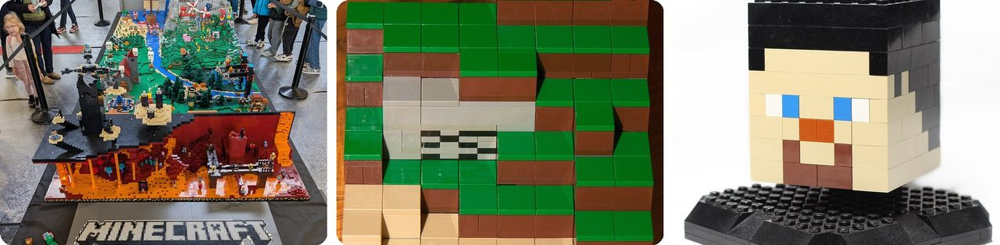
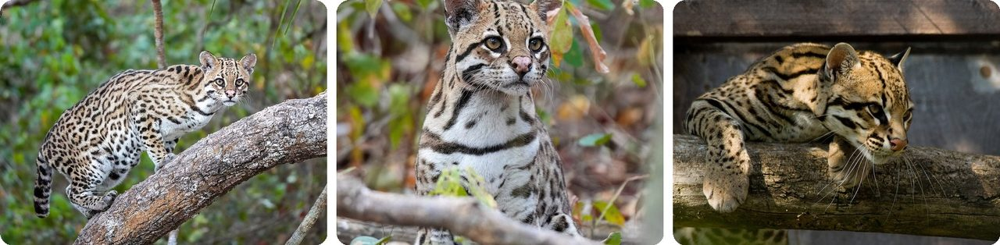
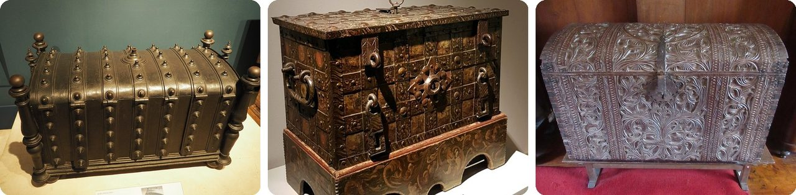
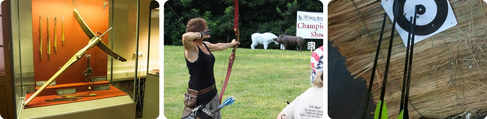
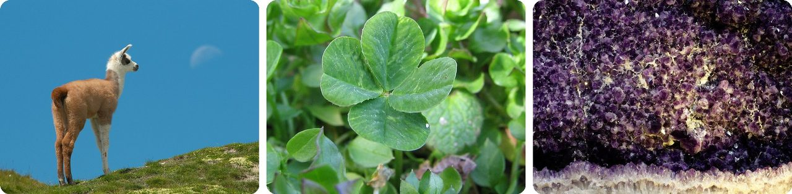
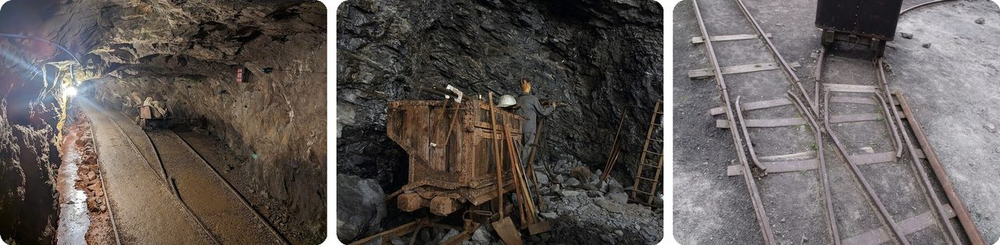
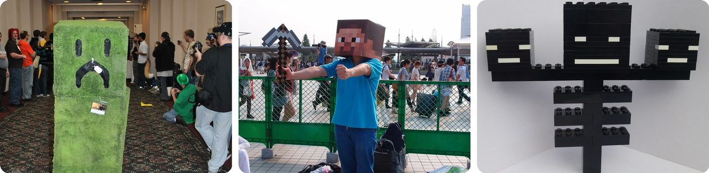
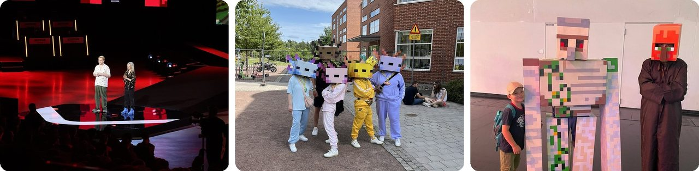

🌍 Top 10 Minecraft Dungeons II Tips and Tricks
Oct 17, 2026
1. 🦘 In Minecraft Dungeons II, you can finally jump

The first Minecraft Dungeons had no jump button. The sequel, released on September 29, 2026 for Nintendo Switch 2 and other systems, adds one, and it changes how you explore.
The rule is simple: you can hop up anything 2 blocks tall or shorter. A 3-block wall is too high. So when a ledge looks just out of reach, count the blocks before you give up.
That's also why the tutorial is worth playing instead of skipping: it teaches the jump and the new moves that the rest of the game expects you to know.
Think of it as finally being allowed to climb on the furniture.
2. 🐆 Jump attacks hit harder, and a cat-paw charm makes them even stronger

Attacking while you jump lands with extra damage, hits a wider area, and staggers enemies more often than a normal combo. Jumping into a crowd is a safe way to start a fight.
There's a catch: with some fast weapons, standing on the ground and swinging deals more damage over time. Jump attacks shine most with slow, heavy weapons.
If you love jumping in, look for the Ocelot's Paw talisman. It boosts jump-attack damage by 10%, then 20%, then 30% as it levels up.
Basically, a belly flop that knocks everyone over.
3. 📚 Enchanting is free to undo, so experiment
Lots of players save their enchantment points "for something better." You don't need to. When you remove enchantments or break down an item, all your enchantment points come back.
Enchant books aren't used up either, so you can try one on a sword, move it to a bow, and move it back. The only thing you don't get back is any echo shards you spent.
You'll unlock enchanting at the Enchantsmith, who sets up next to the Town Merchant in Brave Haven, the heroes' home base, around hero level 15.
In other words, enchanting is written in pencil, not pen.
4. 🧰 Put on your lucky gear before opening a chest

Some gear has bonuses that matter only when loot drops. Items with a pouch icon raise your chance of extra drops, by up to about 60%. Items with a ring icon raise your chance of rarer gear.
So here's the trick: before you open a big chest, swap those items on, open it, then swap back to your fighting gear.
To make it quicker, turn on the mini inventory in Settings > Interface. It lets you change gear without pausing the whole game.
It's like putting on your lucky socks right before the raffle.
5. 🏹 Your arrows never run out

In Minecraft Dungeons II, bows and crossbows don't use up arrows. They recharge on their own after you fire.
That means there's no reason to save your ranged weapon for emergencies. Shooting enemies from far away weakens them before they reach you, and then you can finish them up close.
Mix both: shoot while they walk toward you, then switch to melee when they arrive.
Think of it as a water gun that refills itself.
6. 🍀 Find 8 secret talismans and you unlock a llama pet

Talismans are charms that give you a passive boost, and you can wear up to three at once. Each one levels up from I to III the more you use it.
There are 8 secret talismans hidden in special chests across the world, like the Lucky Clover and the Amethyst Lens. Many sit behind jumping puzzles. The Thrifty Pendant, north of the White Tower in Rainy Plains, is across water on platforms that sink as you land, so you have to keep moving.
Find all 8 and you unlock a fight with a boss called the Mosstrosity. Beat it and it drops Wonderful Wheat, a talisman that summons a llama pet.
Basically, a scavenger hunt with a llama at the end.
7. 🚃 Ride minecarts to get around, and check chests again later

Unlike the first game, Minecraft Dungeons II is one big open world. You walk freely between areas, and minecart stations work as fast travel when you need to cross the map quickly.
And here's a handy one: chests restock after you log out and come back. Dungeon entrances can also move around between sessions, so the map is worth a second look.
Keep an eye out for small golden doors without a dungeon sign. They open into short ambush fights that hand out free rewards.
So the world quietly refills itself while you're away.
8. 🎮 Choose online or offline carefully, it's permanent
When you make a hero, you pick online or offline, and you can't switch later. An offline hero stays offline forever.
On Switch, an online hero needs a Nintendo Switch Online membership even when you play alone. An offline hero doesn't, but it can't join friends online. If you think you'll ever team up online, make your hero online from the start.
Up to four players can play together on a single Switch, over local wireless, or online.
It's like picking your seat on a bus that never stops.
9. 👹 Rematch a boss right away for a one-time prize

After you beat a boss, look for a respawn stone beside the arena. Using it lets you fight that boss again, and the first rematch gives a one-time unique reward.
After that, each rematch gets harder and drops random loot, so it becomes a farming spot.
While you're powering up, fill every artifact slot. The second slot opens at hero level 5 and the third at level 10. Artifacts run on souls, which you earn back by defeating enemies, so use them often instead of saving them.
In other words, beat the boss, then knock on the door again for a bonus.
10. 🌀 Watch the corner of the screen when you enter the Sift

The Sift is a new world full of soul power. You reach it through rifts that open in different places around the map, or through the portal frame in the Deep Dark.
Inside, a symbol in the top corner shows which of three phases you're in: Flow is normal, Thrive makes souls and artifacts recharge faster, and Endure makes enemies tougher. Save your big artifact moves for Thrive. And stay out of the Sift's water: it burns.
Rifts are also the best place to find enchant books. Each rift chest gives at least one, and there are 32 to collect.
It's a level with its own weather forecast.
Fun fact
Minecraft Dungeons almost didn't become a team game at all. It started out as a single-player dungeon crawler for the Nintendo 3DS, inspired by The Legend of Zelda. Once the team tried adding multiplayer, they found it made the game more fun, and the plan changed. Lots of famous games began as something completely different: next time, video games that started out as totally different games.
Photo credits (Wikimedia Commons)
- #1: Diorama Minecraft en Lego (Colmar).jpg by Gzen92, CC BY-SA 4.0
- #1: LEGO Minecraft (6740897797).jpg by Tim Moreillon from Geelong, Australia, CC BY-SA 2.0
- #1: Minecraft Lego head (6790028921).jpg by Dennis Bohman from Boxholm, Sweden, CC BY 2.0
- #2: 016 Ocelot in Encontro das Águas State Park Photo by Giles Laurent.jpg by Giles Laurent, CC BY-SA 4.0
- #2: 081 Ocelot in Encontro das Águas State Park Photo by Giles Laurent.jpg by Giles Laurent, CC BY-SA 4.0
- #2: Ocelot (Leopardus Pardalis), Santago (flickr) by spencer77, CC BY 2.0
- #3: Oldbooks-02.jpg by Liam Quin, Public domain
- #3: Antique books and encyclopedias (Unsplash).jpg by Annie Spratt anniespratt, CC0
- #3: Antique books (flickr) by jafsegal (Thanks for the 4,5 million views), CC BY 2.0
- #4: Iron strongbox 230990.jpg by Slowking4, CC BY-SA 2.5
- #4: Bonnefantenmuseum, kist uit Neurenberg, 16e eeuw.jpg by Anonymous (Nuremberg)Unknown author, CC BY-SA 4.0
- #4: 19th-century chests 9.jpg by CNEcija12345, CC BY-SA 4.0
- #5: Medieval crossbow (14269980150).jpg by Thomas Quine, CC BY 2.0
- #5: Woman shooting a longbow.jpg by WannaBEEfarmer Jeff, CC BY 2.0
- #5: Archery practice.jpeg by User:Leonardob0880, CC BY-SA 3.0
- #6: Lama 1 Luc Viatour.jpg by Luc Viatour, CC BY-SA 3.0
- #6: Four-leaf clover.jpg by Phyzome under the GFDL., CC BY-SA 3.0
- #6: Amethyst geode Planalto MNHN Minéralogie n2.jpg by Marie-Lan Taÿ Pamart, CC BY 4.0
- #7: 2023-05-14 Mine cart at Consolidated Gold Mine Dahlonega Georgia USA.jpg by Clifflandis, CC0
- #7: Sargans - Ore Mine Gonzen (9323172280).jpg by Kecko from Rural area, Eastern Switzerland, CC BY 2.0
- #7: Black Country Living Museum - Racecourse Colliery - mine cart - switch points (flickr) by ell brown, CC BY 2.0
- #8: Nintendo Switch 2 – Tischmodus 20250606.png by PantheraLeo1359531, CC BY 4.0
- #8: Nintendo Switch 2 Joy-Con 2 Blue and Orange.jpg by Crisco 1492, CC BY-SA 4.0
- #8: Nintendo Switch 2 in Docking Console.jpg by Crisco 1492, CC BY-SA 4.0
- #9: Minecraft "creeper" (5146784175).jpg by Douglas Muth from Ardmore, PA, USA, CC BY-SA 2.0
- #9: Minecraft Cosplay @ Comiket 84 - Summer 2013 @ Tokyo Big Sight (9490347671).jpg by Guilhem Vellut from Annecy, France, CC BY 2.0
- #9: LEGO Minecraft Wither (15900983217).jpg by BoB, CC BY 2.0
- #10: MinecraftLive2026TwitchConEurope.jpg by Iuliabac, CC BY 4.0
- #10: Cosplay of Minecraft axolotls.jpg by Rose Abrams, CC BY 4.0
- #10: Gamescom 2025 Minecraft.jpg by Dulamas, CC BY-SA 4.0
.jpg){kind=link}
.jpg){kind=link}
.jpg){kind=link}


.jpg){kind=link}


.jpg){kind=link}


.jpg){kind=link}


.jpg){kind=link}
.jpg){kind=link}
.jpg){kind=link}